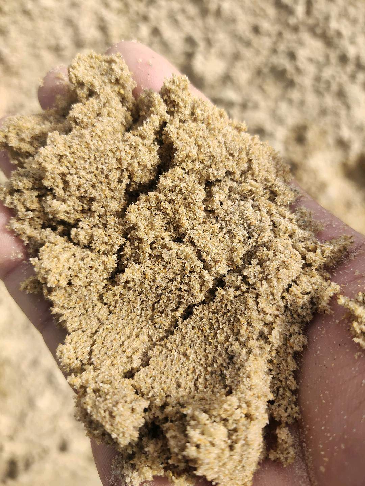
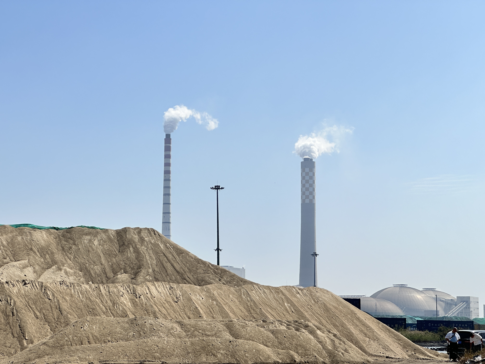

GGBFS Market on Track for $36 Billion by 2034: What the Global Slag Surge Means for Exporters
The global GGBFS market is projected to grow from USD 20.7 billion in 2024 to USD 36.0 billion by 2034 at 5.7% CAGR. US slag cement shipments hit a record 4 million metric tons in 2025. European green cement players are locking in slag supply chains. Together, these signals point to sustained, structural demand for quality GBFS and GGBFS suppliers.
GGBFS 市场有望于 2034 年达 360 亿美元：全球矿渣热潮对出口商意味着什么
全球 GGBFS 市场预计从 2024 年的 207 亿美元增长至 2034 年的 360 亿美元，年复合增长率 5.7%。美国矿渣水泥出货量在 2025 年创下 400 万吨纪录。欧洲绿色水泥企业正在锁定矿渣供应链。这些信号共同表明，优质 GBFS 与 GGBFS 供应商面临持续且结构性的需求增长。

Three major demand signals converged this week. First, market analysts updated their long-range forecast for the global granulated ground blast furnace slag market, projecting growth from USD 20.7 billion in 2024 to USD 36.0 billion by 2034 at a compound annual growth rate of 5.7%. Second, the Slag Cement Association announced that US slag cement shipments reached a record 4 million metric tons in 2025, an 18% year-over-year increase driven by infrastructure demand, data center construction and sustainability mandates. Third, European green cement specialist Hoffmann Green Cement Technologies deepened its regional partnership network for 0% clinker solutions that depend on imported slag feedstock. For suppliers and traders, the combination of a decade-long market expansion, record North American consumption and European supply chain commitments paints a clear picture: GBFS and GGBFS are moving from niche material to mainstream procurement priority.
1. A USD 36 billion market forecast is a signal, not just a number
Market size projections can be abstract, but the 5.7% CAGR figure is important for two reasons. It spans a full decade, which means it is not capturing a short-term spike. And it is driven by multiple reinforcing factors: stricter carbon regulations pushing clinker reduction, infrastructure investment in Asia and North America requiring durable concrete, and the growing use of supplementary cementitious materials in blended cement formulations. For producers and traders, a ten-year expansion at this pace means that capacity planning, logistics investment and customer relationship building all have a more predictable demand backdrop than in cyclical commodity markets. The forecast also implies that the market will need more suppliers, not just more volume from existing ones, because geographic demand growth will outpace the ability of local slag sources to scale in every region.

2. US record slag cement shipments show blended cement is now standard practice
The US slag cement milestone is especially telling. Four million metric tons in a single year, with 18% growth, indicates that blended cement is no longer an experimental or niche product category. It is standard practice in commercial construction, driven by a combination of building code evolution, federal infrastructure spending and private sector sustainability targets. Data center construction — a sector not traditionally associated with slag cement — has become a notable demand contributor as hyperscale operators seek lower-carbon concrete solutions for massive foundations and slab work. The implication for international suppliers is that markets that were once considered mature or slow-moving are now consuming slag-derived materials at record rates, and domestic supply in those markets may not keep pace with the new demand trajectory.

3. European supply chain commitments signal long-term import demand
Hoffmann Green Cement Technologies' recent partnership expansion for clinker-free cement solutions is part of a broader European pattern. As green building regulations tighten and cement producers face mounting pressure to reduce embodied carbon, imported slag feedstock is becoming a structural component of European low-carbon cement strategy. The company is not alone. Across Western Europe, cement producers and green-tech specialists are securing grinding capacity, port routes and offtake relationships that depend on consistent GBFS imports. For Asian suppliers with direct port access and bulk loading capability, this creates a dual opportunity: supplying finished GGBFS to markets with limited grinding infrastructure, and supplying raw GBFS feedstock to markets that are building or acquiring local grinding plants. The common denominator in both cases is reliability — chemical consistency, loading discipline and documentation predictability.
For SENLAN Trading, operating from Tangshan Caofeidian with direct port access and the ability to supply consistent, bulk-quality GBFS and GGBFS, these converging signals reinforce a straightforward commercial message. Global demand for supplementary cementitious materials is not a speculative trend. It is backed by decade-long market forecasts, record consumption data in North America and capital deployment in Europe. The question for exporters is shifting from whether international buyers need slag materials, to whether their supply chain can deliver the quality, volume and reliability that buyers now require. In this environment, suppliers who combine material quality with port-side execution discipline and transparent documentation are likely to find their competitive position strengthening across multiple regions simultaneously.
The near-term outlook is clear. The USD 36 billion forecast, the 4 million metric ton US record and the European supply chain momentum are not separate stories. They share a common thread: cement producers around the world are scaling capacity while simultaneously reducing clinker dependence. That structural shift requires more supplementary cementitious materials, more reliable supply chains and more disciplined execution from raw material suppliers. For companies positioned at the intersection of quality, volume and port logistics, the current signals point to a sustained demand cycle with meaningful opportunities across North America, Europe and Asia.
本周，三大需求信号交汇。第一，市场分析师更新了全球磨细粒化高炉矿渣市场的长期预测，预计从 2024 年的 207 亿美元增长至 2034 年的 360 亿美元，复合年增长率 5.7%。第二，美国矿渣水泥协会宣布 2025 年矿渣水泥出货量达到创纪录的 400 万公吨，同比增长 18%，驱动力来自基础设施需求、数据中心建设与可持续性法规。第三，欧洲绿色水泥专业公司 Hoffmann Green Cement Technologies 深化了依赖进口矿渣原料的零熟料解决方案的区域合作网络。对供应商与贸易商而言，长达十年的市场扩张、创纪录的北美消费量以及欧洲供应链承诺的组合，勾勒出一幅清晰的图景：GBFS 与 GGBFS 正在从小众材料走向主流采购优先项。
1. 360 亿美元的市场预测是一个信号，而不只是一个数字
市场规模预测可能显得抽象，但 5.7% 的年复合增长率之所以重要，有两个原因。首先，它覆盖整整十年，这意味着它捕捉的不是短期 spike。其次，它由多个相互强化的因素驱动：更严格的碳排放法规推动熟料减量、亚洲与北美基础设施投资对耐久混凝土的需求、以及掺配水泥配方中补充胶凝材料的使用增长。对生产商和贸易商而言，以这种速度持续十年的扩张意味着：产能规划、物流投资与客户关系建设都能拥有比周期性商品市场更可预测的需求背景。该预测还暗示，市场将需要更多供应商，而不仅仅是现有供应商的增量，因为地理需求增长将超过各地区本土矿渣来源的扩产能力。
2. 美国矿渣水泥创纪录出货量表明掺配水泥已成为标准做法
美国矿渣水泥的这一里程碑尤其说明问题。一年内达到 400 万公吨、增长 18%，表明掺配水泥已不再是实验性或小众产品类别。它已经成为商业建筑中的标准做法，驱动力来自建筑规范演变、联邦基础设施支出以及私营部门的可持续性目标。数据中心建设——一个传统上与矿渣水泥关联不大的行业——已成为值得关注的需求来源，因为超大规模运营商正在为其庞大的基础与底板工程寻求更低碳的混凝土解决方案。对国际供应商而言，这意味着那些曾经被视为成熟或增长缓慢的市场，如今正在以创纪录的速度消费矿渣衍生材料，而这些市场的本土供应可能跟不上新的需求轨迹。
3. 欧洲供应链承诺释放长期进口需求信号
Hoffmann Green Cement Technologies 近期为无熟料水泥解决方案扩大合作伙伴关系，是欧洲更广泛趋势的一部分。随着绿色建筑法规收紧、水泥企业面临的隐含碳减排压力加大，进口矿渣原料正在成为欧洲低碳水泥战略中的结构性组成部分。这家公司并非个例。在西欧各地，水泥生产商与绿色技术专业公司正在锁定粉磨产能、港口路线与承购关系，而这些都依赖于稳定的 GBFS 进口。对拥有直通港口与大宗装运能力的亚洲供应商而言，这创造了双重机遇：向粉磨基础设施有限的市场供应成品 GGBFS，以及向正在建设或收购本地粉磨厂的市场供应原料 GBFS。两种情形下的共同分母都是可靠性——化学一致性、装运纪律与单证可预期性。
对森蓝贸易而言，在唐山曹妃甸运营、拥有直通港口优势、能够供应品质稳定的大宗 GBFS 与 GGBFS，这些交汇的信号强化了一个直接的商业信息。全球对补充胶凝材料的需求并非投机性趋势。它获得了长达十年的市场预测、北美创纪录消费数据以及欧洲资本部署的支撑。出口商面临的问题正在从国际买家是否需要矿渣材料，转变为他们的供应链能否交付买家如今所要求的品质、规模与可靠性。在这种环境下，那些能够将材料品质与港口执行纪律、透明单证服务结合起来的供应商，有望在多个地区同时巩固自身的竞争地位。
短期前景是清晰的。360 亿美元预测、美国 400 万吨纪录以及欧洲供应链势头，并不是各自独立的故事。它们共享一条主线：全球各地的水泥生产商正在扩大产能，同时降低对熟料的依赖。这种结构性转变需要更多的补充胶凝材料、更可靠的供应链，以及原材料供应商更具纪律的执行。对那些兼具品质、规模与港口物流优势的公司而言，当前信号指向的是一个持续的需求周期，在北美、欧洲和亚洲都蕴含着实质性机遇。
Explore products or discuss your inquiry.
If this market signal is relevant to your sourcing plan, you can review our core product pages or contact us with laycan, quantity, target specification and loading method.
Request a quote